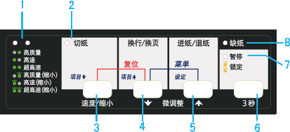

|
|
|||
 |
||||
使用操作面板
您可以通过操作面板上的按钮来控制打印机的简单操作，如逐行进纸、逐页进纸、进纸和退纸以及选择速度和缩小模式。操作面板指示灯可显示打印机的状态。
操作面板按钮和指示灯

1. 速度/缩小指示灯
指示速度和缩小模式的状态。
|
|
高质量
|
|
|
高速
|
|
|
超高速
|
|
|
高质量（缩小）
|
|
|
高速（缩小）
|
|
|
超高速（缩小）
|
=亮，=灭，=闪烁
在默认设置下指示灯亮并持续。
2.切纸(字体)指示灯
当连续纸位于切纸位置时指示灯闪烁。
3.切纸(速度/缩小)按钮*
将连续纸进到切纸位置。
从切纸位置退出连续纸到页顶位置。
4.换行/换页按钮**
按下再松开此按钮时，逐行进纸。
按住此按钮时，退出单页纸或将连续纸退到下一个页顶位置。
5.进纸/退纸按钮**
装入单页打印纸。
如果已装入一页打印纸，则退出此页打印纸。
从待机位置装入连续纸。
将连续纸返回到待机位置。
6.暂停按钮
暂时停止打印，再次按下此按钮时继续打印。 持续按住此按钮3秒钟，打开微调整模式**。 要关闭此模式，再次按下此按钮。
7.缺纸指示灯
当未在所选的纸张来源中装入打印纸或未正确装入打印纸时，此灯亮。
打印纸尚未完全退出或发生夹纸时，此指示灯闪烁。
当锁定模式打开时，和暂停指示灯一起闪烁3秒。
8. 暂停指示灯
打印机暂停时，此指示灯亮。
打印机处于微调整模式**时，此灯闪烁。
打印头过热时，此灯闪烁。
当锁定模式打开时，和缺纸指示灯一起闪烁3秒。
在睡眠模式下，仅此指示灯亮。 所有其他指示灯灭。
*速度和缩小：在微调模式下，可以通过按下切纸（速度/缩小）按钮选择用于打印的速度和缩小模式。速度/缩小指示灯亮、灭或闪烁表示状态。
**微调模式： 当按住暂停按钮3秒时，打印机进入微调模式。 在此模式下，可以按下换行/换页  和进纸/退纸 按钮调整页顶位置或切纸位置。 参见调整页顶位置。
和进纸/退纸 按钮调整页顶位置或切纸位置。 参见调整页顶位置。
和进纸/退纸 按钮调整页顶位置或切纸位置。 参见调整页顶位置。
在睡眠模式下的面板操作
如果距离上次操作已超过4分30秒，且未发生错误，打印机进入睡眠模式。 按下面操作将打印机从睡眠模式中唤醒。
发送打印数据。
按下一个操作面板上的按钮。 按下一个按钮一次可将打印机从睡眠模式中唤醒并通过操作面板指示灯来显示当前状态。
要使用正常的按钮功能，再按下任一个按钮。
 注释：
注释：|
仅按下一个按钮一次可从睡眠模式中唤醒。如果超过20秒没有任何其他操作执行，打印机再次进入睡眠模式。
|